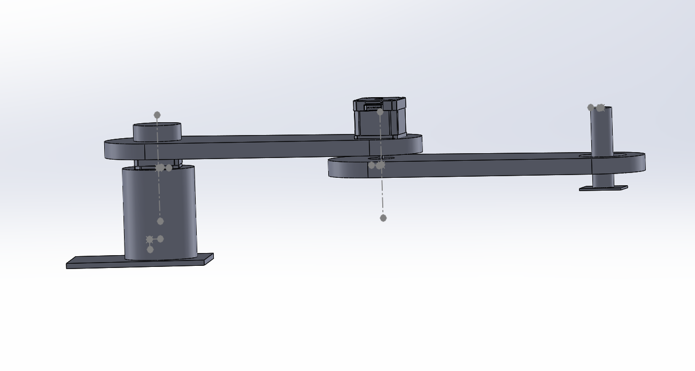
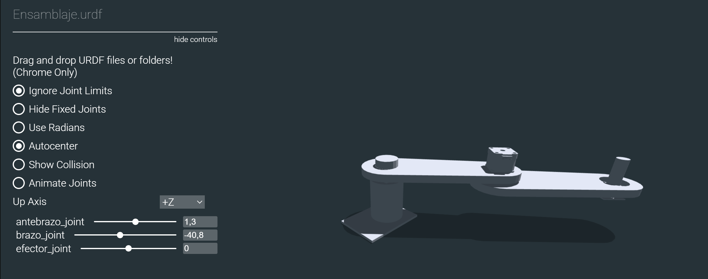

Modelo digital
Archivos URDF
Para crear archivos URDF en base a diseños personalidados de robots con solidworks, es necesario descargar la extensión URDF.
Extension-Solid, para versiones de SolidWorks superiores a la 2021. Seleccionar la opción: SolidWorks 2021
Una vez generado el archivo CAD con el que se va a trabajar, es necesario configurar el arbol de juntas y eslabones del robot usando la extensión de archivos URDF.

Imagen
Esta extensión generará una carpeta con los documentos necesarios para la simulación el robot. Se puede visualizar la configuración obtenida utilizando la herramienta online viewer-urdf, para usarlo, se debe arrastrar la carpeta generada por SolidWorks en la pantalla de visualizador y esta generará una interfaz de manipulación rapida del modelo obtenido.

Ejemplo
En el siguiente enlace Scara-URDF, se encuentra el modelo base que será utilizado para configurar el visualizador RVIZ2 de ROS2.
Visualización de archivos URDF
Para visualizar y manipular el archivo URDF creado se utiliza la herramienta RVIZ, a continuación se muestra los pasos para su configuración.
Instalar paquetes necesarios
sudo apt install ros-humble-joint-state-publisher-gui
Copiar archivos al paquete
Dentro del paquete mi_pkg_python, se debe crear los directorios:
urdf/meshes y launch.
Directorio urdf: agregar el archivo urdf generado y dentro del subdirectorio meshes: colocar todos los archvos STL
Directorio launch: crear un archivo vacio
visualizar_rviz.launch.py
mi_pkg_python/
├── urdf/
│ ├── ensamblaje.urdf
│ └── meshes/
│ ├── base_link.STL
│ └── brazo_link.STL
│ └── antebrazo_link.STL
│ └── efector_link.STL
├── launch/
│ ├── visualizar_rviz.launch.py
nota: Es importante revisar la correcta escritura de los diferentes archivos.
Verifica y edita las rutas en el URDF
Dentro de ensamblaje.urdf, es necesario revisar que las rutas a las
mallas estén definidas con prefijo package://, por ejemplo:
<mesh filename="package://mi_pkg_python/urdf/meshes/base_link.STL"/>
En este punto es necesario revisar que los parámetros sean diferentes de 0, por ejemplo:
<limit lower="-1.57" upper="1.57" effort="1.0" velocity="1.0" />
Modificar
setup.pypara instalar los recursos
Dentro de setup.py, realizar la modificación del bloque
data_files de la sigueinte forma:
data_files=[
('share/ament_index/resource_index/packages', ['resource/' + package_name]),
('share/' + package_name, ['package.xml']),
('share/' + package_name + '/urdf', ['urdf/ensamblaje.urdf']),
('share/' + package_name + '/urdf/meshes', [
'urdf/meshes/base_link.STL',
'urdf/meshes/brazo_link.STL',
'urdf/meshes/antebrazo_link.STL',
'urdf/meshes/efector_link.STL',
]),
('share/' + package_name + '/launch', ['launch/visualizar_rviz.launch.py']),
],
Crear el archivo de lanzamiento
Crea el archivo launch/visualizar_rviz.launch.py con el siguiente
contenido:
# Importa la clase principal para definir lanzamientos en ROS 2
from launch import LaunchDescription
# Importa la acción Node para lanzar nodos ROS 2
from launch_ros.actions import Node
# Permite obtener la ruta del directorio share de un paquete instalado
from ament_index_python.packages import get_package_share_directory
# Módulo estándar para trabajar con rutas de archivos
import os
# Función principal requerida por ROS 2 para ejecutar este archivo de lanzamiento
def generate_launch_description():
# Construye la ruta completa del archivo URDF dentro del paquete
urdf_file = os.path.join(
get_package_share_directory('mi_pkg_python'), # Paquete que contiene el URDF
'urdf',
'ensamblaje.urdf'
)
# Devuelve la lista de nodos a lanzar
return LaunchDescription([
# Nodo que publica el URDF en el topic /robot_description
Node(
package='robot_state_publisher',
executable='robot_state_publisher',
name='robot_state_publisher',
parameters=[{'robot_description': open(urdf_file).read()}] # Carga el contenido del URDF
),
# Nodo que abre una interfaz gráfica con sliders para mover las juntas
Node(
package='joint_state_publisher_gui',
executable='joint_state_publisher_gui',
name='joint_state_publisher_gui',
output='screen'
),
# Nodo que lanza RViz2 para visualizar el robot
Node(
package='rviz2',
executable='rviz2',
name='rviz2',
output='screen'
)
])
¿Por qué se usan estos nodos?
robot_state_publisher: publica la descripción del robot (robot_description) para que RViz2 la use.joint_state_publisher_gui: permite mover las juntas manualmente mediante sliders.rviz2: lanza la visualización.
Compilar y lanzar
cd ~/ros2_ws
colcon build --packages-select mi_pkg_python
ros2 launch mi_pkg_python visualizar_rviz.launch.py
Manejo de datos en RVIZ con URDF.
En este caso se busca crear archivos que permitan obtener y colocar valores en las juntas del modelo URDF creado.
Los datos de las juntas se publican y escuchan utilizando el tipo de
mensaje JointState
JointState
El mensaje JointState representa el estado actual de las
articulaciones del robot.
Campos del mensaje
Header header
string[] name
float64[] position
float64[] velocity
float64[] effort
Campo |
Descripción |
|---|---|
|
Lista de nombres de juntas (ej:
|
|
Posiciones angulares o lineales actuales |
|
(Opcional) Velocidad de cada junta |
|
(Opcional) Torque o esfuerzo de cada junta |
Solo
nameypositionson requeridos para publicar el estado del robot.
Ejemplo:
Dentro de la carpeta mqtt_python crear los archivos 0_urdf_sub.py y 0_urdf_pub.py
import rclpy
from rclpy.node import Node
from sensor_msgs.msg import JointState
class JointMonitor(Node):
def __init__(self):
super().__init__('joint_monitor')
self.subscription = self.create_subscription(
JointState,
'/joint_states',
self.callback,
1
)
def callback(self, msg):
for i, name in enumerate(msg.name):
if name == "brazo_joint" or name == "antebrazo_joint" or name == "efector_joint":
self.get_logger().info(f"{name} → {msg.position[i]:.3f} rad")
def main(args=None):
rclpy.init(args=args)
node = JointMonitor()
rclpy.spin(node)
node.destroy_node()
rclpy.shutdown()
import rclpy
from rclpy.node import Node
from sensor_msgs.msg import JointState
import math
import time
class JointPublisher(Node):
def __init__(self):
super().__init__('joint_publisher_manual')
self.pub = self.create_publisher(JointState, '/joint_states', 1)
self.timer = self.create_timer(0.1, self.publish_joints) # 10 Hz
self.angulo = 0.0
self.distancia = 0.0
self.signo = 1
def publish_joints(self):
msg = JointState()
msg.header.stamp = self.get_clock().now().to_msg()
msg.name = ['brazo_joint', 'antebrazo_joint', 'efector_joint']
# Movimiento sinusoidal para prueba
brazo = math.sin(self.angulo)
antebrazo = math.cos(self.angulo)
efector = self.distancia
msg.position = [brazo, antebrazo, efector]
self.pub.publish(msg)
self.get_logger().info(f'Publicando: brazo={brazo:.2f}, antebrazo={antebrazo:.2f}, efector {efector:.2f}')
if self.distancia >= 0.040:
self.signo = -1
if self.distancia <= 0.000:
self.signo = 1
self.distancia += 0.001*self.signo
self.angulo += 0.005
def main(args=None):
rclpy.init(args=args)
node = JointPublisher()
rclpy.spin(node)
node.destroy_node()
rclpy.shutdown()
Agregar los programas en el setup.py para poder ejecutarlos con ROS2.
tf2
tf2 es el sistema que gestiona transformaciones espaciales entre
los frames del robot.ROS 2 Humble ya incluye tf2 por defecto en la mayoría de instalaciones, pero se puede instalar instalarlo con:
sudo apt update
sudo apt install ros-humble-tf2 ros-humble-tf2-ros ros-humble-tf2-tools
¿Qué hace?
Administra un árbol de transformaciones
Calcula la pose de cada
linkcon respecto a otro (base_link,efector_link, etc.)Usa transformaciones 3D (posición + orientación con cuaterniones)
¿Quién publica los ``tf``?
Fuente |
Transformaciones que publica |
|---|---|
|
Desde |
SLAM / navegación |
|
Sensores / cámaras |
|
Nodos personalizados |
Transforms adicionales según necesidad |
¿Cómo obtener la pose del efector?
Con tf2, puedes usar:
ros2 run tf2_ros tf2_echo base_link efector_link
Ejemplo
Dentro de la carpeta mqtt_python crear el archivo
0_tf2.py
# Importa las clases necesarias de tf2 para escuchar transformaciones
from tf2_ros import TransformListener, Buffer
# Importa la API principal de ROS 2 en Python
import rclpy
from rclpy.node import Node
# Define una clase que extiende de Node para crear un nodo ROS 2
class EffectorPose(Node):
def __init__(self):
# Inicializa el nodo con el nombre 'effector_pose'
super().__init__('effector_pose')
# Crea un buffer donde se almacenan las transformaciones
self.tf_buffer = Buffer()
# Crea un listener que va llenando el buffer automáticamente con los datos de /tf
self.tf_listener = TransformListener(self.tf_buffer, self)
# Crea un temporizador que llama a la función lookup_pose cada 0.5 segundos
self.timer = self.create_timer(0.5, self.lookup_pose)
# Esta función se llama periódicamente para obtener la pose del efector
def lookup_pose(self):
try:
# Busca la transformación desde 'base_link' hasta 'efector_link'
# El tiempo es "now", es decir, la transformación más reciente disponible
t = self.tf_buffer.lookup_transform(
'base_link', # Frame de referencia (padre)
'efector_link', # Frame hijo (efector final)
rclpy.time.Time()) # Tiempo: ahora
# Extrae la posición y orientación de la transformación
pos = t.transform.translation
rot = t.transform.rotation
# Imprime por consola (logger) la pose actual del efector
self.get_logger().info(
f"Pose: x={pos.x:.2f}, y={pos.y:.2f}, z={pos.z:.2f} | "
f"q=({rot.x:.2f}, {rot.y:.2f}, {rot.z:.2f}, {rot.w:.2f})"
)
except Exception as e:
# Si ocurre algún error (ej. aún no existe la transformación), lo muestra como advertencia
self.get_logger().warn(f"No transform: {e}")
# Función principal que lanza el nodo
def main(args=None):
rclpy.init(args=args) # Inicializa el sistema ROS 2
node = EffectorPose() # Crea una instancia del nodo
rclpy.spin(node) # Mantiene el nodo activo procesando eventos
rclpy.shutdown()
Agregar el codigo en el setup.py para poder ejercutarlo con ROS2.
Nota
Si existe un problema de dependencias al ejecutar el código, edita el archivo package.xml y asegúrate de incluir:
<exec_depend>tf2_ros</exec_depend>
<exec_depend>geometry_msgs</exec_depend>
<exec_depend>builtin_interfaces</exec_depend>
Conexión URDF - Steppers
La arquitectura propuesta contempla el uso de la herramienta de visualización RViz2, mediante la cual se manipulan las juntas del robot definidas en un archivo URDF previamente diseñado. Los valores de posición de cada junta generados durante el movimiento se envían a una ESP32, encargada del control de posición de los actuadores a través de los drivers DM542T y A4988. La comunicación entre ROS 2 y la ESP32 se realiza mediante el protocolo MQTT, y la ejecución del movimiento en los motores paso a paso se gestiona utilizando la librería AccelStepper.
Ajuste de velocidad 15 RPM para 3 juntas (NEMA23+PG47 y 2x NEMA17)
Como primer pase se realiza el calculo de setMaxSpeed() y setAcceleration()
en AccelStepper para que las 3 juntas giren a la misma velocidad angular
en el eje final: 15 RPM.
Se considera el sistema descrito previamente:
Junta q1: NEMA23 + driver DM542T + caja reductora PG47 ≈ 46.656:1 con configuración del driver a 400 pulse/rev (motor).
Juntas q2 y q3: NEMA17, con resolución usada en el código: 0.9°/paso, equivalente a 400 pasos/vuelta.
Importante
AccelStepper usa unidades:
- setMaxSpeed(steps_per_second)
- setAcceleration(steps_per_second_squared)
Datos del sistema (pasos por vuelta del eje final)
Junta q1 (NEMA23 + PG47)
Configuración:
Pulsos por vuelta del motor (por microstepping del driver): \(N_{motor}=400\)
Relación reductora: \(R=46.656\)
Pulsos por vuelta del eje de salida:
se obtiene gradosPorPaso = 0.01929°
Juntas q2 y q3 (NEMA17 directos)
Considerando la configuración del driver a4988 de 400 pul/rev se obtiene gradosPorPaso = 0.9°
Conversión general RPM → steps/s
Para cualquier junta con \(N\) pasos/vuelta en el eje final, si se desea una velocidad \(RPM\), la velocidad en pasos/segundo es:
setMaxSpeed para 15 RPM
Junta q1 (NEMA23 + PG47)
Resultado recomendado:
motor1.setMaxSpeed(4666);
Juntas q2 y q3 (NEMA17)
Resultado recomendado:
motor2.setMaxSpeed(100);
motor3.setMaxSpeed(100);
Conversión general aceleración (RPM/s) → steps/s²
La aceleración en AccelStepper también se define en pasos por segundo cuadrado.
Si quieres que todas las juntas tengan aceleración similar en el eje final, elige una aceleración en RPM por segundo (\(RPM/s\)) y conviértela:
setAcceleration recomendado (rampa de 1 segundo)
Una elección práctica para «aceleración similar» es:
Llegar de 0 a 15 RPM en ~1 segundo
Eso equivale a:
5.1 Junta q1 (NEMA23 + PG47)
motor1.setAcceleration(4666);
5.2 Juntas q2 y q3 (NEMA17)
motor2.setAcceleration(100);
motor3.setAcceleration(100);
Bloque de configuración completo (15 RPM, rampa 1 s)
// --- Pasos por vuelta del eje final ---
const float stepsPerRev_q1 = 400.0f * 46.656f; // 18662.4
const float stepsPerRev_q2 = 400.0f; // si 0.9°/paso
const float stepsPerRev_q3 = 400.0f;
// --- Objetivo ---
const float rpm_target = 15.0f;
// --- Velocidad steps/s ---
const float v1 = (rpm_target * stepsPerRev_q1) / 60.0f; // ~4665.6
const float v2 = (rpm_target * stepsPerRev_q2) / 60.0f; // 100
const float v3 = (rpm_target * stepsPerRev_q3) / 60.0f; // 100
motor1.setMaxSpeed(v1);
motor2.setMaxSpeed(v2);
motor3.setMaxSpeed(v3);
// --- Aceleración: llegar a 15 RPM en ~1s (15 RPM/s) ---
const float rpm_per_s = 15.0f;
const float a1 = (rpm_per_s * stepsPerRev_q1) / 60.0f; // ~4665.6
const float a2 = (rpm_per_s * stepsPerRev_q2) / 60.0f; // 100
const float a3 = (rpm_per_s * stepsPerRev_q3) / 60.0f; // 100
motor1.setAcceleration(a1);
motor2.setAcceleration(a2);
motor3.setAcceleration(a3);
// Recomendado para DM542T (pulso seguro)
motor1.setMinPulseWidth(5);
Notas prácticas (muy importantes)
Aunque las ecuaciones igualan velocidad y aceleración en el eje final, la sensación real puede variar por: - carga/inercia distinta en cada junta - fricción y backlash de la reductora - límites de torque y alimentación
Si alguna junta pierde pasos o vibra, baja primero
setAcceleration()(la aceleración suele ser la causa principal).Si q2 y q3 no están realmente a 0.9°/paso (microstepping distinto), debes recalcular \(N_{q2}\) y \(N_{q3}\).
Codigos control - MQTT:
control_stepper.pyEnvia un mensaje JSON con el delta del angulo que debe mover la junta q1 o q2.ESP32Recibe los mensajes y realiza el movimiento del stepper de cada junta de forma relativa.
Dentro de la carpeta mqtt_python crear el archivo control_stepper.py
import paho.mqtt.client as mqtt
import json
import time
# Configuración del broker
BROKER = "192.168.100.178" # Ip del computador o localhost
TOPIC_SUB_SEN = "ra/sensores"
TOPIC_SUB_EST = "ra/estados"
TOPIC_PUB = "ra/juntas"
CLIENT_ID = "cliente_rm1"
# Callback cuando se conecta al broker
def on_connect(client, userdata, flags, rc, properties=None):
if rc == 0:
print("Conectado al broker MQTT")
client.subscribe(TOPIC_SUB_SEN)
client.subscribe(TOPIC_SUB_EST)
else:
print(f"Error de conexión: código {rc}")
# Callback al recibir un mensaje
def on_message(client, userdata, msg):
try:
mensaje = msg.payload.decode("utf-8")
data = json.loads(mensaje)
if msg.topic == TOPIC_SUB_SEN:
print("Mensaje recido del Equipo2 Ultrasónico:", data["ultra"])
if msg.topic == TOPIC_SUB_EST:
print("Mensaje recido del Equipo2 Estado:", data["Estado"])
except Exception as e:
print("Error procesando mensaje:", e)
client = mqtt.Client(client_id=CLIENT_ID, protocol=mqtt.MQTTv311)
# Asociar funciones de callback
client.on_connect = on_connect
client.on_message = on_message
# Conexión al broker
client.connect(BROKER)
# Iniciar loop en segundo plano
client.loop_start()
# Envío continuo de mensajes cada segundo
try:
while True:
payload = {
"q1": 80,
"q2": 80,
"avanzar": 1
}
mensaje = json.dumps(payload)
client.publish(TOPIC_PUB, mensaje)
#print("Publicado en datos_1:", payload)
time.sleep(5)
except KeyboardInterrupt:
print("\n Finalizando conexión MQTT...")
finally:
client.loop_stop()
client.disconnect()
print(" Desconectado correctamente.")
Pestaña 1 del codigo de la ESP32.
#include <PubSubClient.h>
#include <WiFi.h>
#include <ArduinoJson.h>
#include <AccelStepper.h>
// Pines motores paso a paso
#define STEP2 18
#define DIR2 19
#define STEP3 23
#define DIR3 22
// Pines Driver
static const int PIN_STEP = 25; // -> PUL+
static const int PIN_DIR = 27; // -> DIR+
// --------------------
// Config según tu DIP: 400 pulse/rev (del motor)
// Reductora: PG47 46.656:1
// --------------------
static const long PULSES_PER_REV_MOTOR = 400;
static const float GEAR_RATIO = 46.656f;
static const long PULSES_PER_REV_OUT = (long)(PULSES_PER_REV_MOTOR * GEAR_RATIO);
// Convierte grados del eje de salida a pulsos
long outDegreesToPulses(float deg_out) {
float pulses = (deg_out / 360.0f) * (float)PULSES_PER_REV_OUT;
return lroundf(pulses);
}
AccelStepper motor1(AccelStepper::DRIVER, PIN_STEP, PIN_DIR);
AccelStepper motor2(AccelStepper::DRIVER, STEP2, DIR2); // Q1
AccelStepper motor3(AccelStepper::DRIVER, STEP3, DIR3); // Q2
float gradosPorPaso = 0.9;
// Variable de Control Alarmar
int activar = 0;
int estado = 0;
int ultra = 0;
// GPIO de salidad Digital
int pin_led = 2;
// Credenciales Wifi
const char* ssid = "CARMEN GONZALEZ_";
const char* password = "123wa321vg";
// Credenciales MQTT
const char* mqtt_broker = "192.168.100.76";
const int mqtt_port = 1883;
const char* cliente = "rm1_esp32";
// Temas MQTT Publicar
const char* tema_sub = "ra/juntas";
const char* tema_pub_est = "ra/estados";
const char* tema_pub_sen = "ra/sensores";
// Variables de control de tiempo
unsigned long lastTime = 0;
// Creacion del objeto cliente
WiFiClient espClient;
PubSubClient client(espClient);
// Tamaño de mensaje JSON
const size_t capacidad_json = JSON_OBJECT_SIZE(30);
void setup() {
// Setup Serial
Serial.begin(115200);
// Setup Wifi
setup_wifi();
// Setup MQTT
conexion();
// Manejo del rele
pinMode(pin_led, OUTPUT);
// NEMA 23
// AccelStepper
motor1.setMaxSpeed(4665.6); // pulsos/seg (ojo: a mayor, más exigente)
motor1.setAcceleration(3110); // pulsos/seg^2
motor1.setMinPulseWidth(5); // us (seguro para DM542T)
// NEMA 17
motor2.setMaxSpeed(99.9);
motor2.setAcceleration(66.7);
motor2.setPinsInverted(true, false, false); //
motor3.setMaxSpeed(200);
motor3.setAcceleration(100);
// Referencia inicial (si estás arrancando desde "cero")
motor1.setCurrentPosition(0);
motor2.setCurrentPosition(0);
motor3.setCurrentPosition(0);
}
void loop() {
Loop_MQTT();
motor1.run();
motor2.run();
motor3.run();
if (millis() - lastTime >= 100){
estado = 1;
ultra = ultra+1;
envioDatos(tema_pub_est, estado, ultra);
envioDatos(tema_pub_sen, estado, ultra);
lastTime = millis();
}
if (activar == 1){
digitalWrite(pin_led, HIGH); // Enciende el LED
}
else {
digitalWrite(pin_led, LOW); // Enciende el LED
}
}
Pestaña 2 del codigo de la ESP32
void setup_wifi() {
// Conexión Wifi
delay(10);
Serial.println();
Serial.print("Conectando a ");
Serial.println(ssid);
WiFi.begin(ssid, password);
while (WiFi.status() != WL_CONNECTED) {
delay(500);
Serial.print(".");
}
Serial.println("");
Serial.print("WiFi conectado - Dirección IP del ESP: ");
Serial.println(WiFi.localIP());
}
void reconnect() {
// Control de conexión MQTT
while (!client.connected()) {
Serial.print("Intentando conexión MQTT...");
if (client.connect(cliente)) {
Serial.println("Conectado");
// Suscripción a TEMAS
client.subscribe(tema_sub, 1);
} else {
Serial.print("Falló, rc=");
Serial.print(client.state());
Serial.println("Intentando de nuevo en 2 segundos");
delay(2000);
}
}
}
void conexion() {
// Conexión MQTT
client.setServer(mqtt_broker, mqtt_port);
client.setCallback(callback);
}
void Loop_MQTT() {
// Manejo MQTT
if (!client.connected()) {
reconnect();
}
client.loop();
}
void envioDatos(const char* mqtt_topic_publicar, int estado, int ultra) {
DynamicJsonDocument mensaje(256);
if (mqtt_topic_publicar == tema_pub_est) {
mensaje["estado"] = estado;
String mensaje_json;
serializeJson(mensaje, mensaje_json);
client.publish(mqtt_topic_publicar, mensaje_json.c_str(), 1);
}
if (mqtt_topic_publicar == tema_pub_sen) {
mensaje["ultra"] = ultra;
String mensaje_json;
serializeJson(mensaje, mensaje_json);
client.publish(mqtt_topic_publicar, mensaje_json.c_str(), false);
}
}
void callback(char* topic, byte* payload, unsigned int length) {
StaticJsonDocument<capacidad_json> doc;
char buffer[length + 1];
memcpy(buffer, payload, length);
buffer[length] = '\0'; // Asegura que el buffer tenga fin de cadena
DeserializationError error = deserializeJson(doc, buffer);
if (error) {
Serial.print("Error al deserializar JSON: ");
Serial.println(error.c_str());
return;
}
String topico(topic);
if (topico == "ra/juntas") {
if (doc.containsKey("q1") && doc.containsKey("q2") && doc.containsKey("q3")) {
float q1 = doc["q1"]; // NEMA 23
float q2 = doc["q2"]; // NEMA 17
float q3 = doc["q3"]; // NEMA 17
long pasos1 = outDegreesToPulses(q1);
int pasos2 = round(q2 / gradosPorPaso);
int pasos3 = round(q3 / gradosPorPaso);
Serial.print("Recibido q1: ");
Serial.print(q1);
Serial.print(" → pasos: ");
Serial.print(pasos1);
Serial.print("Recibido q2: ");
Serial.print(q2);
Serial.print(" → pasos: ");
Serial.print(pasos2);
Serial.print(" Recibido q3: ");
Serial.print(q3);
Serial.print(" → pasos: ");
Serial.println(pasos3);
// movimiento q1
motor1.move(pasos1);
// Movimiento NEMA Q2 y Q3
motor2.move(pasos2);
motor3.move(pasos3);
}
if (doc.containsKey("avanzar")) {
activar = doc["avanzar"];
}
}
}
ROS2 y el control de stepper
Con el fin de poder reflejar los movimientos del robot Simulado en RVIZ2 y del
robot real, se aplica la combinación de los códigos de mqtt_bridge y
urdf_sub.
Dentro de la carpeta mqtt_python, crear el archivo urdf_mqtt`.
import rclpy
from rclpy.node import Node
from rclpy.duration import Duration
from std_msgs.msg import Float32, Int32
from sensor_msgs.msg import JointState
import paho.mqtt.client as mqtt
import json
import math
class MQTTBridge(Node):
def __init__(self):
super().__init__('mqtt_bridge')
# Angulos del robot
self.real_q1 = 0.0
self.real_q2 = 0.0
self.real_q3 = 0.0
self.pub = self.create_publisher( Float32, 'sensor_bateria', 1)
self.subscription = self.create_subscription(
JointState,
'/joint_states',
self.listener_ros, 1
)
self.last_data = None
self.active = True # control de publicación activa
self.last_mqtt_time = self.get_clock().now()
self.timer = self.create_timer(0.1, self.publish_sensor_data) # Publicador (10 Hz)
self.timer_watchdog = self.create_timer(0.5, self.check_timeout) # Verificador de tiempo
self.topic_sub = "ra/sensores"
self.topic_pub = "ra/juntas"
self.mqtt_client = mqtt.Client()
self.mqtt_client.on_connect = self.on_connect
self.mqtt_client.on_message = self.on_message
self.mqtt_client.connect("192.168.100.224", 1883, 60)
self.mqtt_client.loop_start()
def listener_ros(self, msg):
q1_mov = 0.0
q2_mov = 0.0
q3_mov = 0.0
for i, name in enumerate(msg.name):
# Resolucion del stepper 0.9
if name == "brazo_joint":
meta = round(math.degrees(msg.position[i]),4)
self.real_q1, q1_mov = self.mover_a_angulo_discreto(name, meta,self.real_q1, paso=0.0192)
if name == "antebrazo_joint":
meta = round(math.degrees(msg.position[i]),4)
self.real_q2, q2_mov = self.mover_a_angulo_discreto(name, meta,self.real_q2)
payload = {
"q1": q1_mov,
"q2": q2_mov,
"q3": 0,
}
msg_mqtt = json.dumps(payload)
self.mqtt_client.publish(self.topic_pub, msg_mqtt)
print("Mensaje Enviado")
def mover_a_angulo_discreto(self, junta, angulo_objetivo, angulo_actual, paso=0.9):
"""
Calcula el desplazamiento al múltiplo de 'paso' más cercano al ángulo objetivo.
Retorna:
- el nuevo ángulo corregido (múltiplo de paso)
- el desplazamiento angular necesario desde el ángulo actual
"""
# Calcula desplazamiento
desplazamiento = angulo_objetivo - angulo_actual
# Redondea el ángulo objetivo al múltiplo más cercano
desplazamiento_valido = round(desplazamiento / paso) * paso
meta_ajustada = angulo_actual + desplazamiento_valido
self.get_logger().info(f"{junta} Objetivo: {angulo_objetivo} Objetivo ajustado: {meta_ajustada}° (múltiplo de {paso} Desplazamiento desde actual: {desplazamiento_valido:.2f}")
return round(meta_ajustada,2), round(desplazamiento_valido,2)
def on_connect(self, client, userdata, flags, rc):
if rc == 0:
print("Conectado al broker MQTT")
client.subscribe(self.topic_sub)
else:
print(f"Error de conexión: código {rc}")
def on_message(self, client, userdata, msg):
try:
mensaje = msg.payload.decode("utf-8")
data = json.loads(mensaje)
if msg.topic == self.topic_sub:
self.last_data = float(data["ultra"])
self.last_mqtt_time = self.get_clock().now() # Actualiza tiempo del último dato
self.active = True
except Exception as e:
print("Error procesando mensaje:", e)
def publish_sensor_data(self):
if self.last_data is not None and self.active:
ros_msg = Float32()
ros_msg.data = self.last_data
self.pub.publish(ros_msg)
#self.get_logger().info(f"ROS2 publicó: {ros_msg.data}")
def check_timeout(self):
now = self.get_clock().now()
if now - self.last_mqtt_time > Duration(seconds=2.0):
if self.active:
self.get_logger().warn("No se reciben datos desde MQTT. Se detiene la publicación.")
self.active = False
def main(args=None):
rclpy.init(args=args)
node = MQTTBridge()
try:
rclpy.spin(node)
except KeyboardInterrupt:
pass
rclpy.shutdown()
Registrar el codigo en el setup.py y compilar
cd ~/ros2_ws
colcon build --packages-select mi_pkg_python
Para ejecutar el programa lanzar los archivos:
ros2 launch mi_pkg_python visualizar_rviz.launch.py
ros2 run mi_pkg_python urdf_mqtt